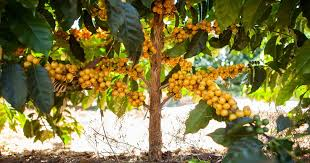

Coffee time!
Want to know more about coffee and how it grows?
Clik on the button bellow to check news
Red beans are the most common type
in here you can explore the varieties
They made a great smooth coffee like the Yellow Bourbon

See in hete the coffe rows
How we dry coffee after the harvest